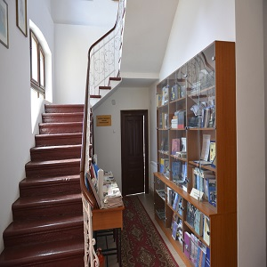
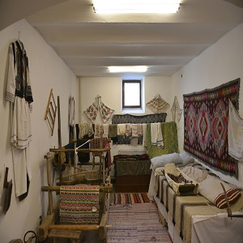
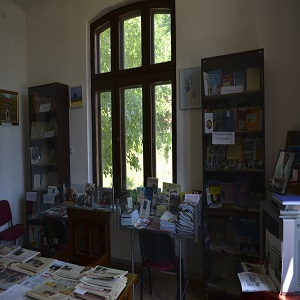
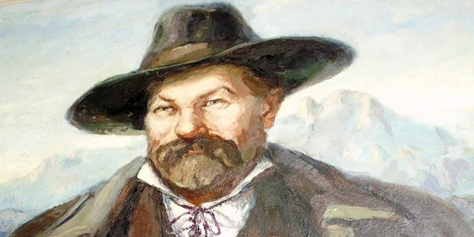

Veghind, parcă, de la distanţă, intrarea de la Propilee spre luxurianta curte interioară a Liceului „Roman-Vodă”, vila Calistrat Hogaş – numită astfel de noi deoarece aici a trăit ca director al şcolii şi a murit autorul „Drumurilor de munte” – deşi, funcţional, face corp comun cu edificiul principal, totuşi, arhitectonic, se detaşează mult, constituind, pentru oraşul muşatin, una din zidirile de o accentuată personalitate. Singura mărturie de apartenenţă la un sistem unitar o reprezintă ţesătura sobră a cărămizilor aparente care, privite însă din anumite unghiuri, cedează în faţa întrepătrunderilor de forme şi ritm. Fiind de proporţii mai mici, prezenţa brâielor demilitative de nivel, din care unul îşi mai adaugă iluzia unui mic balcon continuu, apare mai voalată.
Pentru un privitor care ar admira vila numai atunci când s-ar opri în anumite puncte principale – patru frontale şi patru pe diagonală – clădirea i-ar oferi surprize multiple, determinându-l să creadă că s-a găsit, succesiv, în preajma unor construcţii diferite. E o zidire – caleidoscop care, pe faţete, domină prin dimensiunea de orizontalitate, pe când surprinsă unghiular se elansează verticalic spre cer. Din acestă cauză, fantezia substituie multă simetrie, ultima fiind, oarecum, respectată, la conturarea ferestrelor.
Foarte originală apare cascada acoperişurilor. Se porneşte de la tronson dominat de atitudine, creionat într-o geometrie simplă, se continuă cu un altul mai jos, perpendicular şi montan, pentru a se ajunge apoi la două planuri pure, supuse aceluiaşi unghi de înclinare. De aici fantastica aventură a unui ropot de ploaie căzut peste vilă, care pentru a se ascunde în intimitatae pământului va trebui, mai întâi, să se supună unui ritual coregrafic complex, schimbându-şi mereu, în sarabanda sa coborâtoare, unghiurile de cădere.
Joi, 28 august, s-au împlinit 97 de ani de la trecerea în nefiinţă a bine-cunoscutului autor al
unor volume ca „Pe drumuri de munte” sau „În munţii Neamţului”, Calistrat Hogaş. Cu această ocazie, am răsfoit câteva file imaginare ale vieţii acestuia, dar şi ale istoriei muzeului care îi poartă numele, Casa Calistrat Hogaş, situată în incinta Colegiului Naţional „Roman-Vodă”. Clădirea denumită acum Casa Calistrat Hogaş a fost construită în anul 1897 de arhitectul Constantin Băicoianu, împreună cu doi arhitecţi italieni (Villa şi Fantoli) şi o echipă de muncitori români şi italieni. „Ea a fost concepută ca locuinţă a directorilor Liceului «Roman-Vodă» din acea perioadă. Acest lucru reprezenta o dovadă de deosebit respect pentru directorii Liceului «Roman-Vodă», pentru că societatea de atunci era de părere că directorii trebuie să locuiască cât mai aproape de procesul educaţional, lucru benefic pentru acesta”, mărturiseşte Cornelia Jora, bibliotecară a Colegiului Naţional „Roman-Vodă”, totodată fostă elevă a acestuia. Muzeul a primit numele Calistrat Hogaş deoarece acesta a trăit în această clădire, având funcţia de director al Liceului «Roman-Vodă» între anii 1891-1899 şi s-a stins din viaţă tot în acest edificiu, pe 28 august 1917.
A existat o perioadă, după Revoluţie, când Casa Calistrat Hogaş era într-o stare de degradare avansată, însă cu sprijinul acordat de Primăria Municipiului Roman şi al primarului Laurenţiu Dan Leoreanu, în luna mai a anului 2011, muzeul a fost repus în valoare. „Am încercat să gândesc acest muzeu ca un tot unitar, ca un cerc care se închide”, a mărturisit Cornelia Jora, cea care s-a implicat în valorizarea acestui edificiu cultural. „Nimic nu se realizează dacă nu pui suflet”, a adăugat ea.
În ceea ce priveşte organizarea interioară a Casei Calistrat Hogaş, Cornelia Jora povesteşte că la subsolul vilei se găsesc elemente de etnografie şi folclor, două etaje ale vilei sunt dedicate ştiinţei, artei şi culturii cuprinzând documente, cărţi, diplome, titluri academice adunate de la foşti profesori şi elevi ai colegiului, dintre care amintim doar câteva nume Gheorghe A.M. Ciobanu, Violeta Lăcătuşu, Max Blecher, Virgil Petrovici, I.C. Istrati, Lazaro Orenstein, Mihail Jora, D.D. Botez. „Pe măsură ce ne apropiem de cer, încheiem cu partea spirituală, adică segmentul ecumenic, ţinând cont de contextul religios din zonă: ortodoxie, cultul catolic şi cultul mozaic”, prezintă Cornelia Jora mansarda vilei.
În prezent, Casa Calistrat Hogaş este vizitată de foştii elevi ai colegiului. „În această vară au fost peste 15 întâlniri de promoţie. Am bătut recordul!”, spune Cornelia Jora. Tot în vara ce tocmai se încheie, Casa Calistrat Hogaş a fost vizitată de academicianul Solomon Marcus, care a rămas plăcut impresionat de documentele deţinute de muzeu. „M-a felicitat şi m-a încurajat să continui”, a spus Cornelia Jora. Pe de altă parte, primele ore de dirigenţie pentru „bobocii” din clasele a IX-a se ţin în Casa Hogaş: „În societatea actuală, nonvaloarea este extrem de mediatizată şi tinerii noştri sunt debusolaţi”, a explicat Cornelia Jora.
Despre Vila Hogaș

Muzeul de Etnografie si Folclor „Roman Metropolitan”
Subsolul vilei este dedicat Muzeului de Etnografie si Folclor „Roman Metropolitan”, care reuneste obicecte si tinute ce reconstruiesc atmmosfera gospodariilor taranesti din zona.

Muzeul Colegiului Național „Roman-Vodă”
Salile de la parterul vilei gazuiesc >Muzeul Colegiului Național „Roman-Vodă” unde sunt expuse manuscrise sau documente cu valoare de uncicat, semnate de Garabet Ibraileanu, Cezar Petrescu, Panait Musoiu, Richard Stein, Vitalie Belousov sau Virgil Petrovici..

Muzeul Ecumenic al Spiritualității Romanești
Mansarda vilei este destinata Muzeului Ecumenic al Spiritualității Romanești. Colectia muzeala inmanuncheaza obiecte de cult reprezentative pentru Biserica Ortodoxa, Biserica Romano-catolica si comunitatea evreiasca, reprezentant simbolic comunitatile religioase care traiesc in armonie in zona Romanului.
Calistrat Hogas

Muzeul Colegiului Naţional „Roman-Vodă“, adăpostit de casa în care a locuit Calistrat Hogaş, păstrează sute de documente de valoare. Vila în care a locuit Calistrat Hogaş s-a transformat în muzeu în mai 2011.
„Trăim într-o societate în care non-valoarea este extrem de mediatizată, încât noi, cei care am pus bazele acestui muzeu, respectiv conducerea Colegiului Naţional «Roman-Vodă», profesorii pensionari ai acestui liceu şi eu, bibliotecarul liceului, am vrut să demonstrăm că numai aşa putem rezista în timp, dacă ne raportăm la valorile noastre, culturale şi spirituale“, susţine bibliotecarul Cornelia Jora.
Cei care trec pragul muzeului găsesc aici file din istorie. Prima personalitate marcantă a oraşului, prezentă în muzeu prin fotografiile şi premiile sale, este matematicianul Alexandru Cojocaru, fost profesor al Colegiului Naţional „Roman-Vodă“. „A primit numeroase invitaţii să predea la Iaşi, la universitate, dar a preferat să rămână aici să îndrume elevii. Cei care au făcut matematica cu el ştiau atât de multe, încât ar fi putut intra direct în anul doi de facultate“, explică bibliotecarul Cornelia Jora.
.